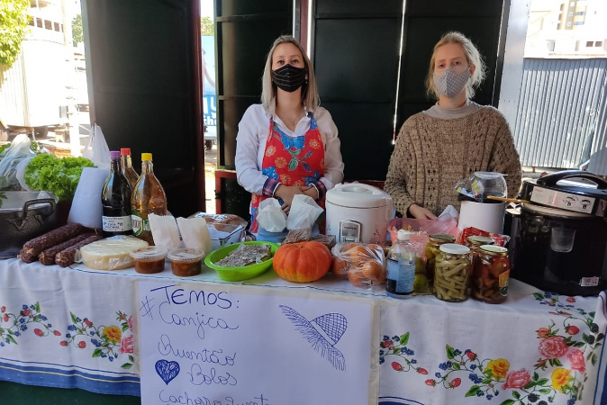

Sabores da Terra
Festas típicas que unem tradições urbanas e rurais.

Encantos do Percurso
Experiências que ficam na memória!
Feiras e Conexões
Produtores locais presentes nas feiras urbanas.

Pegadas da Terra
A criação de animais que une tradição e inovação!

Sementes da Família
Alimentos do campo enriquecem a mesa da cidade!

Raízes e Expressões
Das nossas origens aos nossos dias.